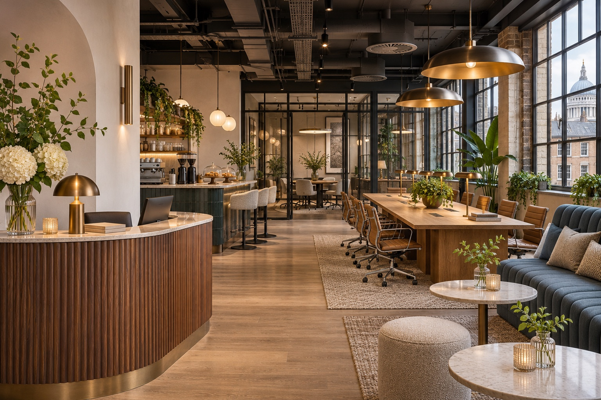
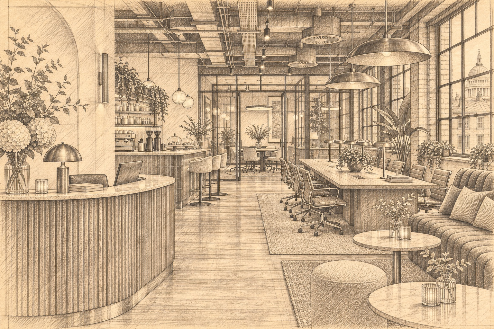

Workplace Strategy & Design
Define what your teams need, then turn the brief into layouts, concepts and a coordinated design.
Commercial design & build
BAMBU Interiors brings workplace design, cost planning and construction together. We design around your brief, your budget and the requirements of your building.
Discuss your project

01 / Services
Bring us in for a specific part of your project or appoint one team to design, build and support your workplace.
Define what your teams need, then turn the brief into layouts, concepts and a coordinated design.
Develop the design, specification and construction programme together, with one point of responsibility.
Specify and procure furniture, fixtures and equipment around durability, lead times and cost.
Plan meeting room AV, connectivity and workplace technology alongside the fit-out.
Help your team settle in, resolve defects and plan ongoing care after handover.
Coordinate trades, access, sequencing and site logistics, including phased work in occupied buildings.
02 / How we work
From commercial towers to listed properties and occupied workplaces, we account for the constraints that shape how work can be delivered.
Set a cost target early and compare practical choices for layout, materials and scope. See how each option affects cost and programme before the design is fixed.
When a Licence to Alter is needed, we identify landlord and building management requirements early. We coordinate drawings, specifications and technical information for review and respond to queries as the submission progresses.
03 / Sectors
Create inviting, repeatable spaces with a specification that makes sense across sites.
Improve lettability and plan refurbishments around asset priorities, tenant needs and capital budgets.
Make a new space your own or adapt an existing workplace with a clear plan for cost, approvals and delivery.
04 / Prior experience
These placeholders refer to prior professional experience. They are not completed BAMBU Interiors projects.
Prior experience placeholder
Case study details pending verification.
Prior experience placeholder
Case study details pending verification.
05 / Contact
Tell us where you’re working, what needs to change and when you’d like to move in.
hello@bambuinteriors.co.uk